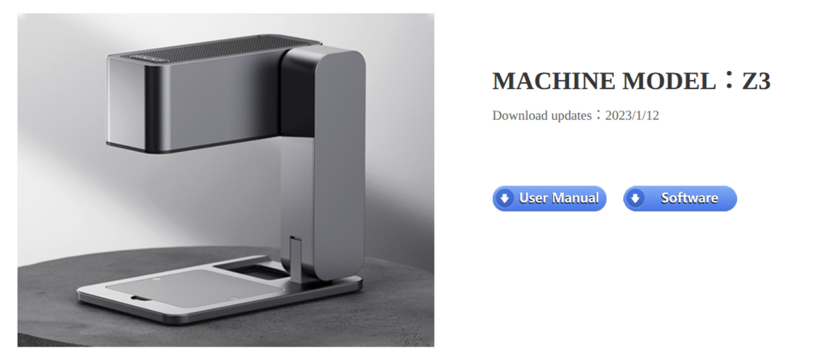
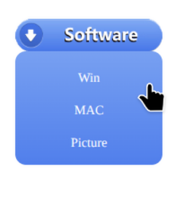

TODO
Find Android software. Install it and get some video of it in simple operation.
Find PC software. Install it and get some video of it in simple operation.
A chromium-centric file-only (server-not-needed) blog
There's a meta-blog here where I track my progress on modifying/improving this blog's content.
Find Android software. Install it and get some video of it in simple operation.
Find PC software. Install it and get some video of it in simple operation.
Google AI (not Gemini) proposed some things about the Genmitsu Jinsoku Z3 5W Galvo Laser Machine. Here's the raw AI conversation:
SainSmart, the company behind Genmitsu products has a Facebook page where people discuss and show off their work.
The Genmitsu Jinsoku Z3 Galvo Laser Machine may actually be a rebranded one of these: https://www.wainlux.com/products/wainlux-z3-foldable-laser-engraver
The Wainlux Z3 has this weird site with software on it: https://www.dkjxz.com/. Don't be put off by the fact it's http://. Scroll down until you find the Z3.
When you find it, you'll notice there are two buttons, one for the User Manual and one for the Software.

The User Manual button downloads Z3_User Manual.rar, which is already downloaded locally: ./Z3_User%20Manual.rar.
The Software button has a drop-down menu with Win, Mac and Picture.

The Win link downloads Z3_Windows.rar, which is already downloaded locally: ./Z3_Windows.rar.
The Z3_User Manual.rar file contains Z3-UserManual(v01-220503)-EJC.pdf . The EJC stands for English Japanese and Chinese. It has all three in one manual.
The Mac link probably downloads Mac software, but I don't have a Mac so I haven't downloaded it.
The Picture link downloads Z3_Picture.rar, which is already downloaded locally: ./Z3_Picture.rar.
Sainsmart (who makes Genmitsu products) has some resources here: https://docs.sainsmart.com/article/mcnw8t7gwa-z-3. Look for "Z3 SD Card Files":
Mention is also made of Cutlabx
I did a branch onhttps://github.com/pflagerd/blog-bootstrap called genmitsu-jinsoku-Z3-galvo-laser